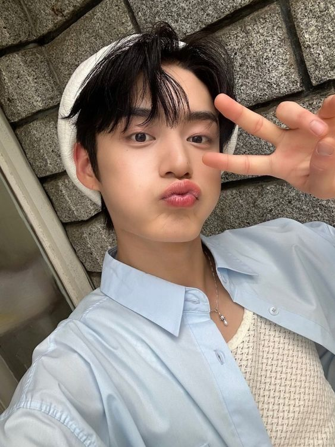
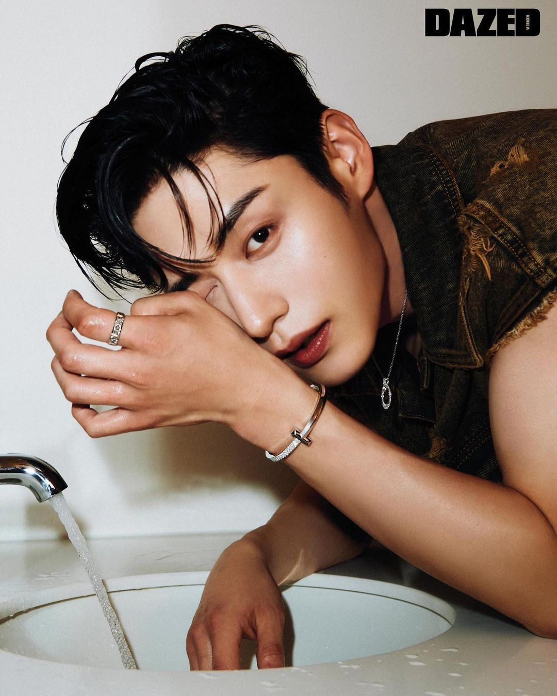
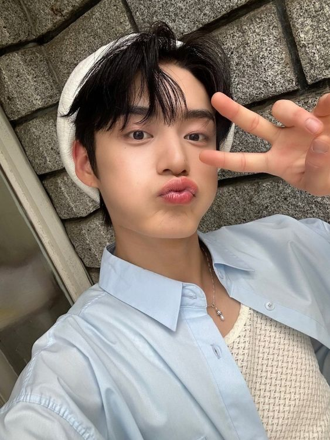
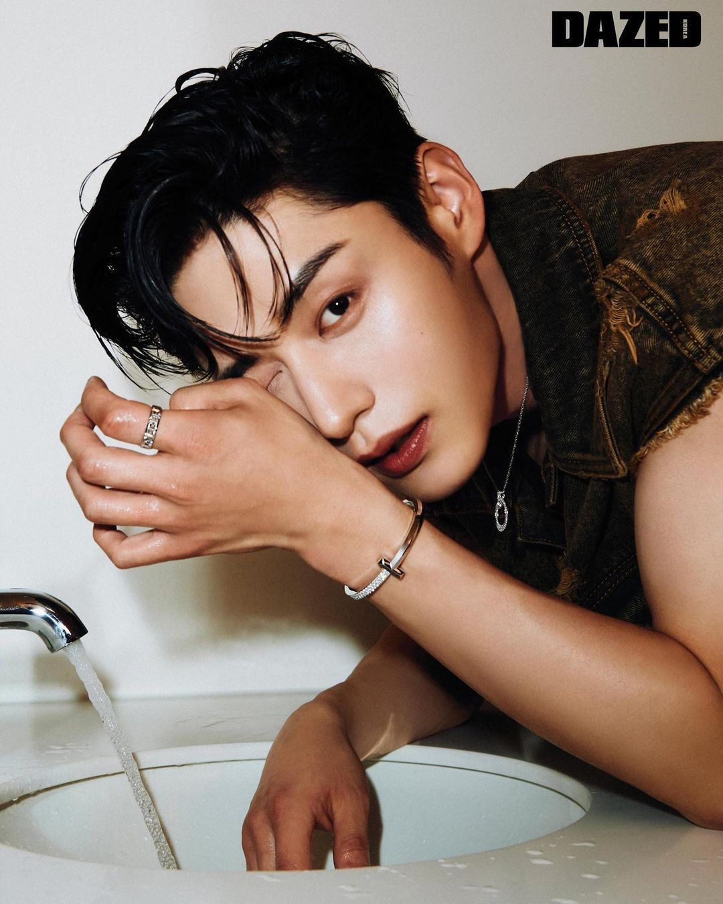

Kim Ji Woong (김지웅) is a singer and actor under Nest Management. He is the eldest member of ZEROBASEONE.
He is best known for being a contestant on the reality survival shows Burn Up 30 and Boys Planet.
In the final episode of Boys Planet, he was ranked 8th; making him a member of ZEROBASEONE.
He can speak Korean and proficient Japanese.
As the eldest member of ZB1 he takes his job very seriously as he hopes to be a comforting source
for the boys and a shoulder whom they can lean on!
Prior to Boys Planet, Jiwoong starred in several
BL dramas such as Kissable Lips, Roomates of Poongduck 304 and The Sweet Blood etc.,
Unlike the other members of ZEROBASEONE, Jiwoong has starred in several survival shows
and has debuted in multiple groups in the past (ATEEN, B.I.T, INX).
A/N: I actually wanted to put a Pororo gif here but i couldnt find a transparent gif.
So if anyone has one pls send them my way!
 


